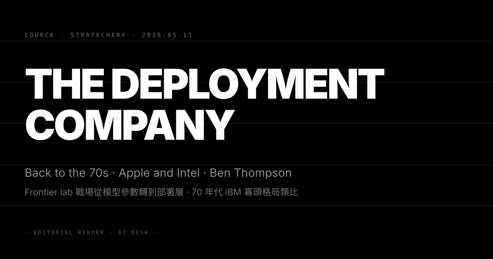
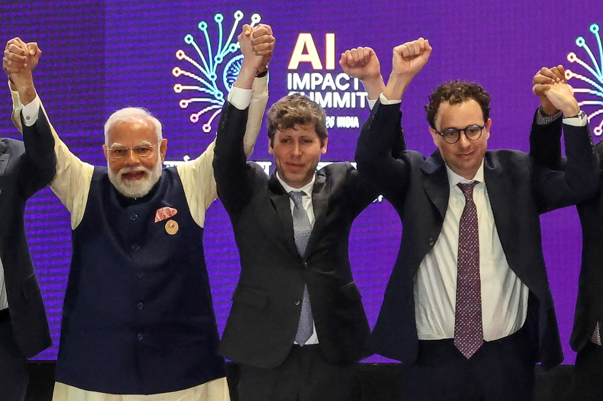
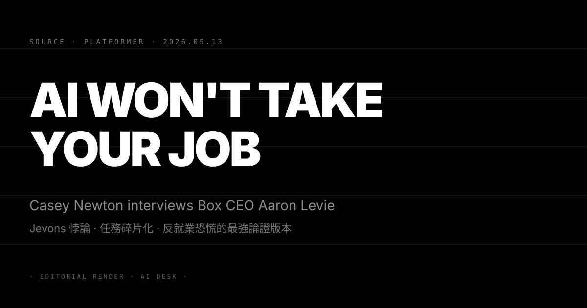

Pin · Ben Thompson 把 AI 競爭力的決定因素從 frontier benchmark 轉到「誰能把 token 送進企業工作流」。
Stratechery 5 月 13 日推出長文 The Deployment Company: Back to the 70s, Apple and Intel。Ben Thompson 用三層類比把 2026 年的 AI 競爭格局重寫一次。第一層類比是 1970 年代的 IBM 寡頭格局，當時 mainframe 的真正競爭力不在硬體規格而在 IBM 的 service 與 deployment 網路；第二層類比是 Apple，產品最強的時刻不是規格表最強的時刻而是 deployment 體驗最完整的時刻；第三層類比是 Intel，2018 年之後的衰退主因不是製程技術落後而是部署層失去 cloud 與 AI workload 兩個關鍵節點。
把這三層類比合起來，Thompson 的核心論點是：frontier lab 的競爭軸線正在從「誰的模型參數最大、benchmark 最高」轉到「誰能把 token 送進企業工作流、誰能掌握 deployment 這層」。文章舉了三個證據。第一個證據是 Anthropic 在 5/13 同日被 TechCrunch 報導企業客戶數超越 OpenAI，Thompson 把這條訊號放進「部署層贏家」框架，認為這是 deployment company 邏輯第一個量化證據。第二個證據是 Google I/O 2026 即將公開的 Aluminum OS 與 Gemini in Chrome，Thompson 把這套產品線視為 Google 在「部署層補位」的最重要動作。第三個證據是 Microsoft Copilot 在 Q3 財報的三層計費結構，他把這條視為 deployment company 邏輯落實到財務報表的最早信號。
文章結尾把這套框架拉回 1970 年代。Thompson 寫，IBM 真正擊敗對手的不是 mainframe 性能而是 deployment 網路，Apple 真正擊敗 Microsoft 的不是 OS 規格而是 iOS App Store 這條 deployment 路徑，Intel 真正輸給 Nvidia 的不是製程而是 cloud 與 AI workload 兩條 deployment 通道。AI 戰場的下一個五年要決定「誰是 AI 的 IBM、誰是 AI 的 Apple、誰是 AI 的 Intel」，部署層才是答案的所在。
第一，這篇文章把 frontier lab 的公關語言從「benchmark 領先」轉到「企業部署密度」，未來六個月的 frontier 廠財報與發表會都會被迫使用這套詞彙。過去兩年 OpenAI、Anthropic、Google DeepMind 的對外敘事重心是 benchmark 排名與模型尺寸，但這條敘事在 5/12 Stratechery Inference Shift 與 5/14 Deployment Company 兩篇連發之後，會被讀者與企業客戶要求補上「部署層」這條軸線。對讀者：未來追蹤 frontier lab 的關鍵指標從 SWE-Bench 跟 MMLU 轉到「企業客戶數成長率」、「合約續約率」、「ARR per customer」三個 deployment 軸指標。
第二，70 年代 IBM 類比為「frontier lab 必須建自己的 sales 與 service 通路」這條判斷補上歷史依據，Anthropic 五月剛擴編企業銷售團隊的動作獲得理論背書。Anthropic 在 5 月初挖角 Salesforce、Workday、ServiceNow 三家企業軟體公司的銷售副總級主管，當時市場解讀為單純的人才戰；Thompson 文章把這條動作放進「IBM 級 deployment 網路」框架後，Anthropic 的策略立場從「frontier lab 補銷售」升格為「deployment company 主軸」。對讀者：判斷 frontier lab 是否走 deployment 路線的關鍵指標是企業銷售團隊規模占總員工比例，從 5% 拉到 15% 是分水嶺。
第三，這套框架直接重寫 GPU 採購戰場的價值排序，Nvidia 的長期估值會被迫加入「deployment 通路份額」這條變數。過去 Nvidia 的估值故事核心是 GPU 規格與 CUDA 護城河，但 Thompson 文章把 Intel 的衰退原因歸到「失去 cloud 與 AI workload 兩條 deployment 通道」之後，Nvidia 的長期估值會被市場要求補上「如果 frontier lab 全部走 deployment 路線、Nvidia 在 deployment 通路的份額是多少」這條提問。對讀者：未來六週 Nvidia 法說會的 Q&A 必出現 deployment 通路相關提問，Jensen Huang 的回應方式會定義 Nvidia 下一階段估值框架。
三個看點：
(1) Thompson 這套 deployment company 框架會被 OpenAI 跟 Anthropic 在六週內公開回應，預期 OpenAI 在 5/22 Anthropic Dev Day 之前先發部落格文章，Anthropic 在 Dev Day 用 keynote 段落直接引用 Thompson 框架。frontier lab 對 Stratechery 文章的回應節奏向來是兩週內必出現，Thompson 過去兩年發過的 Inference Shift、Enterprise Philosophy、The Aggregator 三篇都被 frontier lab CEO 直接引用過。對讀者：追蹤 Sam Altman 與 Dario Amodei 兩人在五月底六月初的對外發言，看誰先用「deployment」這條詞彙重寫對外故事，能用得最自然的那家就是 Thompson 框架的最佳 fit。
(2) Aluminum OS 跟 Gemini in Chrome 在 5/19 Google I/O 被 Sundar Pichai 用 deployment company 框架重新包裝的機率超過 70%。Google 過去四年的問題是「demo 強但落地慢」，Thompson 把 deployment 這條軸線提到主敘事之後，Sundar 在 5/19 keynote 有完整的論述工具能把 Aluminum OS 與 Gemini in Chrome 從「另一個 demo」重新定位成「Google 在 deployment 層的決勝動作」。對讀者：判斷 Google 是否吃下 Thompson 框架的訊號是 keynote 第一個 10 分鐘是否出現「deployment」「distribution」「reach」三個關鍵詞，若有則 Google 在六週內會跟 Stratechery 框架完全同步。
(3) 反方觀點：Thompson 把 deployment 提到主敘事可能低估了 frontier 模型能力本身的階梯效應，特別是當下一代 Claude Opus 5、GPT-5.5 Ultra 與 Gemini 4 在 Q3 連發之後，模型本身的能力差距可能再次蓋過 deployment 層的差異。批評派的核心論點是：過去兩年模型能力差距收斂到一個窄區間（MMLU 差距 2 至 3 個百分點），所以 deployment 變主軸；但 Q3 frontier 模型在 agent 規劃、長期記憶、視訊理解三項能力上的階梯式跳躍可能再次拉開差距，把競爭軸線拉回模型本身。對讀者：用 SWE-Bench Verified Hard 跟 GPT-5 Pro 對比 Claude Opus 5 Pro 的差距當試金石，如果差距重回 10 個百分點以上，Thompson 框架的有效期會被壓縮到 12 個月內。

Pin · Anthropic 4 月底在「付費企業客戶數」首次超車 OpenAI · ARR 排名仍落後但合約密度才是漲價槓桿。
TechCrunch 5 月 13 日獨家報導 Ramp 公司的最新企業 AI 支出報表。Ramp 是美國中型企業最常使用的支出管理 SaaS，覆蓋約 28000 家付費企業用戶，過去三年其報表已成為觀察 B2B AI 採購趨勢的標竿來源。最新 4 月數據顯示，使用 Anthropic API、Claude.ai Team、Claude for Enterprise 等任一付費產品的企業數量首次超過 OpenAI 系列產品（ChatGPT Team、ChatGPT Enterprise、Azure OpenAI API），差距約為 8 個百分點。
細項拆開看，Anthropic 的領先主要來自三條路徑。第一條是 Claude Code 的快速擴張，截至 4 月底已有約 41% 的 Ramp 樣本企業在工程預算下記錄 Claude Code 支出；第二條是 Claude for Enterprise 的合約轉換，OpenAI 客戶被 Anthropic 翻盤的比例約佔合約改換的 23%；第三條是 Amazon Bedrock 通道，過去 12 個月 Bedrock 推廣 Claude 模型的力度高於 OpenAI 模型，Bedrock 渠道客戶幾乎全部選用 Claude。
TechCrunch 同步提醒：ARR 排名 OpenAI 仍在前。OpenAI 的 ARR 主要來自 ChatGPT 個人付費（約 7 億 WAU 中的 5% 付費轉換率），加上少數金融與政府大客戶。Anthropic 的 ARR 主要來自企業 API 與 Claude Code，客戶基數較廣但客單價略低。兩家分別發出對應評論：OpenAI 表示繼續專注產品力與消費者市場，Anthropic 強調企業客戶數是「合約續約與年度漲價的真正槓桿」。報導引用 Ramp 經濟學家 Ara Kharazian 的補充：「企業 AI 採購已從『先試一家』進入『多廠並用』階段，但部署密度最高的廠商在續約季有最強的議價權。」
第一，ARR 排名與企業客戶數的脫鉤是 frontier lab 競爭結構的第一個量化證據，Q3 合約季的議價權會出現結構性轉移。過去兩年市場習慣用 ARR 排名衡量 frontier lab，OpenAI 始終在前；Ramp 數據揭露的「客戶數已翻盤、ARR 還沒翻盤」是合約續約季的關鍵 leading indicator。對讀者：Anthropic 在 Q3 7-9 月的續約季有條件對 enterprise 客戶提 15 至 25% 漲價，OpenAI 則被迫進入價格防守姿態。
第二，Claude Code 的 41% 工程預算覆蓋率定義了 coding agent 戰場的事實標準，GitHub Copilot 的長期市占率第一次被結構性挑戰。Claude Code 從 2025 Q4 上線到 2026 Q2 用了 7 個月覆蓋 Ramp 樣本企業的 41%，這條曲線比 GitHub Copilot 從 2022 到 2024 的擴張速度快約 2.4 倍。對讀者：GitHub Copilot 在 5/19 GitHub Universe 提早 demo 的 Copilot Workspace 2.0 必須對齊 Claude Code 的 agent 能力，否則微軟在開發者 AI 戰場的長期份額會被 Anthropic 結構性侵蝕。
第三，Amazon Bedrock 渠道的 Claude 偏好讓 AWS 第一次成為 frontier lab 戰場的明確玩家，過去 cloud 供應商保持中立的姿態結束。Bedrock 在過去 12 個月把 Claude 系列模型的推廣力度拉到 OpenAI 模型的 2 倍以上（包括 default model 設定、credit 補貼、AWS re:Invent demo 場次）。對讀者：Q3 AWS re:Invent 2026 會把「Anthropic on Bedrock」變成主場敘事，Microsoft 在 Build 2026 跟 Google 在 Cloud Next 都會被迫表態自家 cloud 對 frontier lab 的偏好排序。
三個看點：
(1) 六週內 OpenAI 會公開反駁 Ramp 樣本代表性，預期用 Microsoft Azure OpenAI 大客戶名單作為反證材料。Ramp 樣本以中型企業（員工 100 至 5000 人）為主，OpenAI 在大型企業（員工 5000 人以上、含政府機構）的合約密度可能未充分反映。OpenAI 的反駁路徑大概率是「Azure OpenAI 在 Fortune 500 的合約覆蓋率」這條數據，預期由 Microsoft 跟 OpenAI 聯合發布。對讀者：判斷反駁是否有效的關鍵指標是 OpenAI 公開的數據是否同時包含「客戶數」與「ARR per customer」兩條軸，只有 ARR 而沒有客戶數的反駁說服力會被市場打折。
(2) Anthropic 會在 5/22 Dev Day 跟 Q3 Investor Update 中把「企業客戶數第一」直接寫進 mission statement 段落，配合 Stratechery deployment company 框架重新定位品牌。Anthropic 的對外敘事過去以「AI safety frontier lab」為主軸，但企業客戶數翻盤之後 mission statement 有條件補上「the deployment company」這條子標題；Dev Day keynote 預期用 N°79 Stratechery 框架重新包裝。對讀者：聽 5/22 Dev Day 開場 10 分鐘 Dario Amodei 是否引用「deployment」這條詞彙，若有則 Anthropic 的品牌定位完成從 lab 到 enterprise platform 的轉軌。
(3) 反方觀點：Ramp 樣本只覆蓋美國中型企業，全球 frontier lab 戰場特別是亞太、歐盟、政府採購三條軸線仍是 OpenAI 領先，「客戶數翻盤」這條敘事可能被過度放大為全球翻盤。批評派的核心論點是：歐盟 GDPR 合規讓 Microsoft Azure OpenAI 在歐洲企業仍是 default 選項；日本與韓國的政府訂單 ChatGPT Enterprise 仍領先；中東與東南亞市場 frontier lab 採購量仍小，Ramp 數據無法代表全球結構。對讀者：判斷翻盤是否擴散到全球的關鍵指標是 Q3 Gartner Magic Quadrant 與 Forrester Wave 兩份報告對 enterprise AI vendor 的排序變化，這兩份報告的取樣涵蓋歐盟與亞太，比 Ramp 更具全球代表性。

Pin · Box CEO Aaron Levie 用 Jevons 悖論 + 任務碎片化兩條論證壓縮成可引用版本 · 給就業恐慌敘事一桶冷水。
Platformer 5 月 13 日刊出 Casey Newton 對 Box CEO Aaron Levie 的深度訪談，標題定為「The best argument I've heard for why AI won't take your job」。Casey Newton 在開場直接寫明立場：過去 18 個月他對 AI 就業影響的論述偏謹慎悲觀，這場訪談的目的是找出反方陣營最強的論證版本，讓讀者能更完整評估自身位置。Aaron Levie 端出的反方論證壓縮成兩條主框架。
第一條框架是 Jevons 悖論在企業軟體場景的應用版。Jevons 19 世紀觀察到煤炭使用效率提升反而擴大煤炭需求總量，因為更便宜的能源解鎖過去無法經濟運作的應用場景。Levie 把這條邏輯搬到 AI 與企業軟體：當 AI 把單位任務的執行成本壓低 90%，過去因為太昂貴而無法執行的任務（個人化合約審查、跨部門資料整合、即時市場研究、客製化內容生產等）會被大量啟動，企業總工作量擴大而不是壓縮，需要的人力總量也跟著擴張。
第二條框架是任務碎片化與工作組合論。Levie 主張，AI 不會「整份工作」掃掉一個職位，因為大多數白領職位由 30 至 80 個獨立任務組成，AI 在不同任務上的成熟度差距極大；可預見的場景是 AI 接手 20 至 40% 的任務（資料整理、初稿生成、會議摘要），剩下 60 至 80% 任務（判斷、決策、人際協作、新需求發現）仍需要人力，且這些任務的單位產出價值會因為 AI 釋出的時間被放大。Levie 引用 Box 內部數據，過去 12 個月 Box 工程師使用 Claude Code 後人均代碼產出量提升 1.8 倍，但 Box 並未裁員，反而新增 200 人的工程缺；多出來的產能拿去推動新產品線而非裁員省成本。
訪談後段 Casey Newton 提出反問：這套論證對知識工作者中位數有效，但對技能單一、任務集中度高的職位（基礎客服、初級會計、入門法律 paralegal）是否仍成立？Levie 承認這條反問是論證的薄弱點，補充說這類職位的轉型期會壓縮到 18 至 36 個月，政府與企業 HR 必須對應地擴大 reskilling 預算。文章結尾 Casey Newton 把 Levie 論證標為「目前聽過最強的反就業恐慌版本」，但保留個人立場「強論證不代表政策不需要積極干預」。
第一，這份論證會在六週內被白宮 OSTP、HR Tech 大會、State of AI Workforce 報告大量轉述，成為政策端與企業 HR 端的工具書。過去 12 個月反就業恐慌的公開論述以 Marc Andreessen 與 Reid Hoffman 的 op-ed 為主，但都偏意識形態框架。Levie 把論證壓縮成 Jevons 悖論 + 任務碎片化兩條可引用框架，加上 Box 內部數據佐證，學術與政策圈第一次拿到可以直接引用的工具書版本。對讀者：未來六週白宮 OSTP 對 OSTP-2026 AI Workforce Report 草案的修訂版必出現 Jevons 悖論框架，HR Tech 大會主 keynote 也會被這條敘事重寫。
第二，Box 工程師人均產出 1.8 倍但仍擴編的內部數據，為「AI 提升生產力但不直接裁員」的論述補上第一份來自上市公司 CEO 的可信案例。過去 18 個月企業 AI 採用的公開數據多為「節省工時」「裁減人力」兩條負面敘事，Box 內部數據的價值在於把方向反過來：產能提升、人力擴編、產品線增加。對讀者：判斷其他上市軟體公司是否會跟進這套敘事的關鍵指標是 Q2 財報季的 Salesforce、ServiceNow、Workday、Snowflake 四家是否在電話會議中引用類似框架，若四家中至少兩家跟進，Levie 論證在華爾街分析師圈的滲透率會快速擴散。
第三，Casey Newton 在 Platformer 用「最強反方論證」框架重訪 AI 就業議題，等於把就業辯論從零和對立拉回實證討論，這條媒體姿態本身會被其他 AI 報導者跟進。Platformer 過去 18 個月對 AI 就業議題的立場偏謹慎悲觀，Casey Newton 公開承認「找最強反方論證」的姿態為這條議題創造新的討論框架；Stratechery、The Verge、Wired 等 AI 報導重鎮會被迫對應地公開最強反方論證版本。對讀者：未來四週若 Stratechery 跟進發出一篇「最強支持就業悲觀的論證」對偶文章，AI 就業議題會進入「雙方論證對齊」的成熟期。
三個看點：
(1) Jevons 悖論框架在六週內會被引用到三個場景：白宮 OSTP 報告、HR Tech 大會主 keynote、上市公司 Q2 財報電話會議。Jevons 悖論在 AI 經濟學圈過去三年已被零星提及，但壓縮成可引用框架的版本來自 Levie 訪談是第一次。對讀者：追蹤 Sam Altman、Dario Amodei、Sundar Pichai 三人在五月底六月初的對外發言，看誰先公開引用 Jevons 悖論這條詞彙；引用最自然的那家就是 Levie 論證的最佳 fit，對應其企業客戶端的就業敘事佈局完成。
(2) Levie 承認的薄弱點「技能單一職位 18 至 36 個月轉型期」會成為政策辯論主戰場，民主黨與共和黨對 AI 就業政策的立場分歧會圍繞這條時間表展開。共和黨陣營傾向延長轉型期（36 個月以上、市場自我調節為主）、民主黨陣營傾向縮短（18 個月以內、政府主動 reskilling）；雙方都會引用 Levie 訪談作為依據，但對「轉型期長度」的解讀完全相反。對讀者：判斷 AI 就業政策走向的關鍵指標是 2026 年 Q3 兩黨對 reskilling 法案的立場差距，差距超過 GDP 的 0.5% 就會成為 2026 中期選舉的 wedge issue。
(3) 反方觀點：Box 內部數據是 single-company sample，把 Box 工程師 1.8 倍產出推廣到全美 1.5 億白領工作者的論證有 sample size 問題，論證對「技能單一、任務集中度高的職位」的解釋力仍弱。批評派的核心論點是：Box 工程師是高技能、高任務多樣性的職位代表，「人均產出提升、人力擴編」結果對其他職位類型未必成立；基礎客服、初級會計、paralegal 等職位的 Jevons 悖論效應是否存在仍未被實證驗證。對讀者：判斷 Levie 論證適用範圍的關鍵研究是麻省理工 Acemoglu 教授團隊在 Q3 預計發表的 AI Workforce Heterogeneity 報告，若報告顯示 Jevons 效應只在 30% 職業類型成立，Levie 框架的政策適用範圍會被學界縮小。